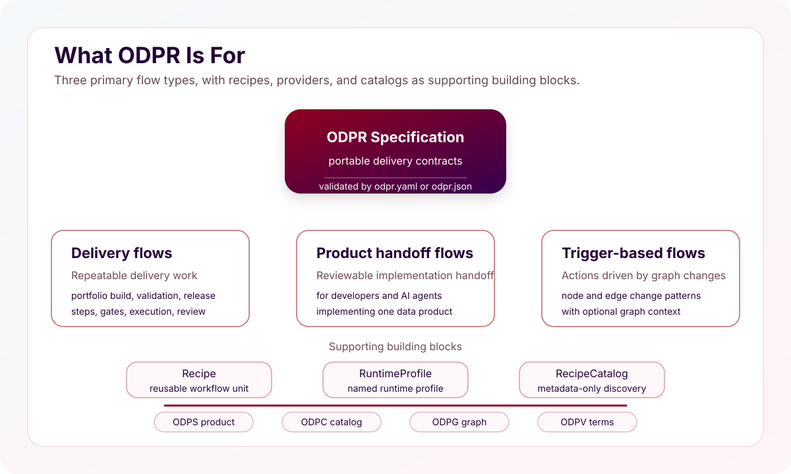
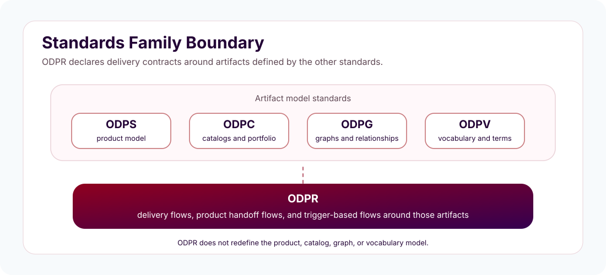
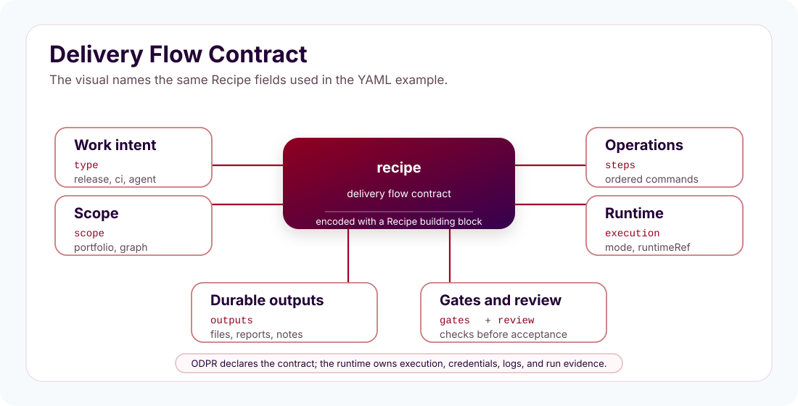

OPEN DATA PRODUCT RECIPE SPECIFICATION - The Linux Foundation
Version DRAFT
The key words "MUST", "MUST NOT", "REQUIRED", "SHALL", "SHALL NOT", "SHOULD", "SHOULD NOT", "RECOMMENDED", "NOT RECOMMENDED", "MAY", and "OPTIONAL" in this document are to be interpreted as described in BCP 14 (RFC 2119 and RFC 8174) when, and only when, they appear in all capitals, as shown here.
The specification is shared under Apache 2.0 license. Development of the specification is under the umbrella of the Linux Foundation.
| Topic | Link | Description |
|---|---|---|
| Version source | Data Product Recipe Specification on GitHub | Official source repository for the ODPR specification |
| Knowledge Base | Open Data Product Spec Family Knowledge Base | Practical examples, FAQs, and implementation guidance |
| Contribute | Raise an issue in GitHub | Submit issues or suggestions to the specification maintainers |
Introduction
The Data Product Recipe Specification, ODPR, is a lightweight, vendor-neutral, machine-readable standard for repeatable data product delivery.
ODPR is part of the OpenDataProducts.org standards family. It complements the Open Data Product Specification, ODPS, Open Data Product Catalogs, ODPC, Open Data Product Graphs, ODPG, and Open Data Product Vocabulary, ODPV, by defining how delivery work around those artifacts can be declared, discovered, configured, validated, reviewed, and handed off.
ODPR standardizes how data product work gets done, not only what the final artifact looks like.
ODPR has three primary composite flows. It defines delivery flows for repeatable work such as portfolio building and release validation. It defines product handoff flows for developers and AI agents implementing one data product. It defines trigger-based flows, where graph changes can make declared work applicable.
Recipes, runtime profiles, and recipe catalogs are supporting building blocks. Recipes describe the reusable workflow unit. Runtime profiles let recipes reference approved LLM or model runtime configuration without embedding credentials, endpoints, or model settings in the recipe. Catalogs help teams and agents discover available recipes.

What ODPR defines
- define delivery flows for repeatable data product work
- define product handoff flows for one data product
- define trigger-based flows driven by graph changes
- support those flows with recipes, runtime profiles, recipe catalogs, context policy, gates, and review expectations
Note! In "Open Data Product" the focus is on the latter words and the prefix "open" refers to the openness of the standard. Any connotations to open data are not intentional, intended, or desirable.
Why ODPR is needed
Data product work often depends on manual command sequences, scripts, notebooks, prompts, and local habits. That creates delivery variation, makes validation and review steps easy to skip, hides model-provider choices, and forces CI/CD automation and AI agents to guess the intended workflow.
ODPR solves this by giving teams and tools three composite flow contracts: delivery flows, product handoff flows, and trigger-based automation boundaries. A recipe building block describes:
- what workflow runs
- which inputs it uses
- which outputs it creates
- which steps run
- which checks or gates apply
- which context format is preferred
- which execution mode is expected
- which runtime reference is expected
- whether human review is required
Primary flow types
ODPR has three root-level flow types.
1. Delivery flows declare repeatable work such as portfolio building, validation, localization, publishing, and release review.
2. Product handoff flows declare the reviewable handoff for developers and AI agents implementing one data product.
3. Trigger-based flows declare when graph changes can make work applicable. They use triggers and graph context, while ODPG remains the graph source of truth.
Recipes, runtime profiles, and recipe catalogs support these flows. They are part of ODPR v1 because flows need reusable workflow units, runtime references, and discovery, but they are not the main reason the specification exists.
Supporting functions
Recipe, RuntimeProfile, and RecipeCatalog are support building blocks for the
three flow types. Their detailed YAML structures are described after the flow
sections.
Relationship to the standards family

The OpenDataProducts.org standards family follows a separation of concerns:
- ODPS defines the product.
- ODPC defines catalogs and reusable portfolio objects.
- ODPG defines relationships and graphs.
- ODPV defines shared vocabulary and terms.
- ODPR defines delivery flows, product handoff flows, and trigger-based flows around those artifacts.
ODPR does not define the product, catalog, graph, or vocabulary model. It defines delivery workflow and handoff contracts around those artifacts.
Reading order
Read the three flow sections first: Delivery Flows, Product Handoff Flows, and Trigger-Based Flows. Then use the support sections for the reusable YAML building blocks: Recipe, RuntimeProfile, and RecipeCatalog.
Delivery Flows
Root shape example:
schema: https://opendataproducts.org/odpr-v1.0/schema/odpr.yaml
version: "1.0"
kind: Recipe
recipe:
metadata:
id: RCP-DELIVERY-001
name:
en: Portfolio Delivery Flow
version: "1.0.0"
type: release
scope: portfolio
execution:
mode: hosted
runtimeRef: runtime-profiles/examples/production-quality.yaml#production-quality
steps:
- id: refresh-portfolio
command: portfolio.refresh
review:
required: true
Delivery flows declare repeatable work around data product artifacts. They cover work such as portfolio building, validation, localization, publishing, release review, and other delivery operations that teams want to make portable across tools and environments.
Delivery flows coordinate a sequence of delivery operations. A delivery flow can generate or refresh artifacts, validate them, render outputs, localize content, explain results, and require review before release.
Delivery flow boundaries
A delivery flow SHOULD answer five practical questions before any tool runs:
- What delivery work is being performed?
- Which artifact area is affected?
- Which ordered operations run?
- Which durable outputs should exist afterwards?
- Which gates or review expectations apply?
A delivery flow MUST NOT redefine ODPS product metadata, ODPC catalog structure, ODPG graph semantics, ODPV vocabulary terms, SDK internals, provider internals, or CI/CD engine behavior. It may reference those standards as inputs, context, or outputs of the delivery work.
Delivery flow fields
| Element name | Type | Options | Description |
|---|---|---|---|
schema |
string | ODPR schema URI | URI of the ODPR schema used to validate the document. |
version |
string | ODPR specification version | Version of the ODPR specification used by the document. |
kind |
string | Recipe |
ODPR root object type. Delivery flows are encoded as Recipe documents. |
recipe |
object | - | Top-level object that declares the delivery flow contract. |
recipe.metadata |
object | - | Stable delivery flow identity and name. |
recipe.metadata.id |
string | - | Stable delivery flow identifier. |
recipe.metadata.name |
object | localized text object | Human-readable delivery flow name. |
recipe.version |
string | semantic version | Version of this delivery flow artifact. This is separate from the top-level ODPR specification version. |
recipe.type |
string | development, ci, release, agent, custom |
Delivery flow intent. Use development for draft generation or working artifacts, ci for automated validation, release for portfolio preparation or publication review, agent for agent-assisted delivery work, and custom only when the standard intents do not fit. |
recipe.scope |
string | data-product, portfolio, graph, catalog, fragment, custom |
Artifact area affected by the delivery flow. |
recipe.execution.mode |
string | local, hosted, hybrid, none |
Runtime expectation for the delivery flow. |
recipe.execution.runtimeRef |
string | runtime reference | URI-reference to a RuntimeProfile document. A fragment selects the provider profile when needed. |
recipe.steps |
array | ordered step objects | Ordered delivery operations that run. |
recipe.outputs |
array | output objects | Durable files, folders, reports, rendered pages, or review notes expected after the run. |
recipe.gates |
array | gate objects | Validation, quality, publication, or release conditions. |
recipe.review.required |
boolean | true, false |
Whether human review is required before accepting the delivery flow result. |
Delivery flow model
recipe:
type: release
scope: portfolio
execution:
mode: hosted
runtimeRef: runtime-profiles/examples/production-quality.yaml#production-quality
inputs:
- id: portfolio-workspace
path: portfolio/
steps:
- id: refresh-portfolio
command: portfolio.refresh
- id: explain-portfolio
command: portfolio.explain
outputs:
- id: release-explanation
path: portfolio/explanation.md
gates:
- id: human-review
type: review
required: true
review:
required: true
A delivery flow is the portable operating contract for a repeatable delivery activity. It is not the artifact being produced and it is not the runtime that executes the work. It declares the work in a form that a developer, CI runner, SDK executor, MCP server, or AI agent can inspect before the run starts.

Every delivery flow SHOULD make these parts visible:
| Part | Purpose |
|---|---|
| Work intent | The delivery activity being performed, such as draft generation, validation, portfolio refresh, localization, release review, or publishing preparation. |
| Scope | The artifact area affected by the work, such as one product workspace, generated fragments, graph context, catalog input, or portfolio output. |
| Operations | The ordered delivery operations that run, including the command names and the minimal inputs needed by each operation. |
| Runtime expectation | Whether the flow expects local, hosted, hybrid, or model-free execution, and which runtime reference is used when model-backed work is required. |
| Durable outputs | The files, folders, rendered pages, reports, or review notes that should exist after the run. |
| Gates and review | The validation checks, quality checks, human review, or release ownership expectations that determine whether the result can be accepted. |
The supporting Recipe building block carries the structured fields for these
parts. The delivery flow section defines why the flow exists and what contract
it represents; the Recipe section defines the reusable YAML shape.
Delivery flow examples
Canonical examples live in /recipes/examples/. They are complete ODPR files
that demonstrate delivery flow patterns without making this section a YAML
reference manual.
| Example | Demonstrates |
|---|---|
minimal.yaml |
A smallest valid delivery flow for local draft generation. |
ci-validate-generated-fragments.yaml |
A CI delivery flow that generates fragments, validates them, and fails when a required gate fails. |
release-portfolio-review.yaml |
A production delivery flow that refreshes, localizes, explains, and requires review before release. |
portfolio-localization.yaml |
A localization delivery flow that turns portfolio input into configured language outputs. |
hybrid-graph-review.yaml |
A hybrid delivery flow where local graph context is prepared before hosted explanation or review. |
Product Handoff Flows
Product handoff flows create a reviewable handoff for developers and AI agents
implementing one data product. The DataProductRecipe manifest is the
structured building block for that handoff.
The manifest indexes a reviewable set of files. Mandatory core sections make every data product recipe understandable and validatable, including the graph context for the product. Optional standardized sections add detail only when the product needs them.

DataProductRecipe is the ODPR root object for the reviewable handoff artifact
used by developers and AI agents when planning and implementing one data
product.
The data product recipe manifest describes the handoff artifact. It does not define implementation workflow execution, and it does not define the ODPS product itself. Developers and AI agents may use their own repositories, platforms, CI/CD systems, SDKs, and agent tools to implement the product. The source product specification remains an ODPS file referenced by the data product recipe.
Root structure
Root shape example:
schema: <ODPR schema URI>
version: "1.0"
kind: DataProductRecipe
dataProductRecipe:
metadata:
id: <data product recipe id>
name: <localized data product recipe name>
description: <localized data product recipe description>
version: <data product recipe artifact version>
status: draft
sections: []
readiness: {}
review: {}
The data product recipe root uses the same ODPR document envelope as other ODPR
objects: schema, version, and kind identify the document, and
dataProductRecipe contains the manifest.
Manifest
Example:
schema: https://opendataproducts.org/odpr-v1.0/schema/odpr.yaml
version: "1.0"
kind: DataProductRecipe
dataProductRecipe:
metadata:
id: DPR-001
name:
en: Customer Analytics Data Product Recipe
description:
en: Reviewable recipe for delivering the Customer Analytics data product.
version: "1.0.0"
status: draft
sections:
- id: recipe-readme
path: README.md
format: markdown
- id: source-product-spec
path: product-context/odps.yaml
format: yaml
- id: product-summary
path: plans/product-summary.md
format: markdown
- id: delivery-plan
path: plans/delivery-plan.md
format: markdown
- id: open-questions
path: governance/open-questions.md
format: markdown
- id: ai-agent-brief
path: agent/ai-agent-brief.md
format: markdown
- id: relationship-context
path: context/odpg.yaml
format: yaml
readiness:
score: 0
status: missing
review:
required: true
status: pending
data-product-recipe.yaml is mostly structure and metadata. More precisely, it
is the manifest index for the handoff artifact. It answers these questions:
- What is this Data Product Recipe?
- What version, status, readiness, and review state does it have?
- Which required files are included?
- Where are those files?
- What format are they?
- Is there optional provenance, such as
recipeRef?
The manifest MUST NOT contain the full plan content, product specification,
relationship graph, pricing details, implementation instructions, or AI-agent
operating brief. Those details belong in referenced files such as
plans/delivery-plan.md, product-context/odps.yaml, context/odpg.yaml,
optional plan sections, and agent/ai-agent-brief.md.
The YAML example shows the minimal valid data product recipe manifest. It
includes every schema-required field and every mandatory section ID, including
relationship-context, but omits optional metadata and optional sections such
as pricing-plan, sla-plan, and relationship-plan.
Manifest fields
| Element name | Type | Options | Description |
|---|---|---|---|
metadata |
object | - | Stable data product recipe identity and name. |
metadata.id |
string | - | Stable data product recipe identifier. |
metadata.name |
object | localized text object | Human-readable data product recipe name. |
metadata.description |
object | localized text object | Short data product recipe description for human readers. |
version |
string | semantic version | Version of this data product recipe artifact. This is separate from the top-level ODPR specification version. |
status |
string | announcement, draft, development, testing, acceptance, production, sunset, retired |
Data product recipe lifecycle status aligned with ODPS status values. |
sections |
array | mandatory section IDs | Data product recipe section index with stable section IDs, paths, and formats. The source ODPS product specification and recipe README are referenced through mandatory section entries instead of duplicate top-level fields. |
readiness.score |
number | 0-100 |
Readiness confidence; 0 means no readiness confidence and 100 means full readiness confidence. |
readiness.status |
string | missing, partial, ready |
Readiness status. |
review.required |
boolean | true, false |
Whether human review is required before implementation, publication, automation, or agent-assisted code work. |
review.status |
string | pending, approved, changes-requested |
Review state for the manifest: still pending, approved, or requiring changes. |
Optional data product recipe fields
| Element name | Type | Options | Description |
|---|---|---|---|
recipeRef |
relative path | - | Optional provenance or generation-context reference for the ODPR recipe that created or informed the data product recipe. It is not an instruction for developers or AI agents to execute an ODPR workflow recipe. |
Package structure
Minimum folder structure example:
customer-analytics-data-product-recipe/
├── data-product-recipe.yaml
├── README.md
├── product-context/
│ └── odps.yaml
├── context/
│ └── odpg.yaml
├── plans/
│ ├── product-summary.md
│ └── delivery-plan.md
├── governance/
│ └── open-questions.md
└── agent/
└── ai-agent-brief.md
A minimum valid data product recipe is a small manifest-led folder. The root
contains the data-product-recipe.yaml manifest and the README.md entrypoint.
The remaining files are the mandatory core sections referenced from
dataProductRecipe.sections, including the source ODPS product specification,
relationship context, planning notes, governance questions, and AI-agent brief.
This folder structure is the recommended minimum convention. It keeps the schema-required section IDs discoverable without making ODPR a filesystem standard.
| Folder or file | Typical content |
|---|---|
data-product-recipe.yaml |
Root DataProductRecipe manifest. |
README.md |
recipe-readme section and first reader entrypoint. |
product-context/ |
Source ODPS product specification. |
context/ |
Mandatory ODPG graph or relationship context. |
plans/ |
Mandatory product summary and delivery plan. |
governance/ |
Mandatory open questions. |
agent/ |
Mandatory AI agent brief and agent-facing handoff guidance. |
The schema validates the section IDs, paths, and formats declared in
dataProductRecipe.sections. It does not require every data product recipe to
use identical directory names, but using the minimum structure makes packages
predictable for humans, SDKs, CI checks, and AI agents.
Full folder structure
Full folder structure example:
customer-analytics-data-product-recipe/
├── data-product-recipe.yaml
├── README.md
├── product-context/
│ └── odps.yaml
├── context/
│ └── odpg.yaml
├── plans/
│ ├── product-summary.md
│ ├── delivery-plan.md
│ ├── product-interface-plan.md
│ ├── access-plan.md
│ ├── contract-plan.yaml
│ ├── pricing-plan.md
│ ├── quality-plan.md
│ ├── sla-plan.md
│ ├── lifecycle-plan.md
│ ├── relationship-plan.md
│ ├── validation-plan.md
│ └── test-plan.md
├── readiness/
│ └── operational-readiness.md
├── governance/
│ ├── open-questions.md
│ ├── risk-register.md
│ └── developer-review-checklist.md
├── implementation/
│ ├── implementation-constraints.md
│ └── backlog-items.md
├── portfolio/
│ └── portfolio-context.md
└── agent/
└── ai-agent-brief.md
The full structure shows one conventional placement for every standardized optional section. It is an example for complete or highly governed data product recipes, not the minimum required package.
Optional planning sections can live under plans/ when they describe product
interfaces, access, contracts, pricing, quality, SLA, lifecycle, relationships,
validation, or tests. Readiness-specific material may use readiness/.
Governance material may use governance/. Implementation-oriented optional
sections may use implementation/, and portfolio context may use portfolio/.
The manifest remains the source of truth. A full folder is valid only when the
corresponding optional section IDs, paths, and formats are declared in
dataProductRecipe.sections. Files that are not declared in the manifest are
supporting material, not standardized Data Product Recipe sections.
Required handoff contents
The following core files define the minimum data product recipe that a
developer, reviewer, SDK, CI check, or AI agent can rely on. A valid
DataProductRecipe manifest MUST reference each one through
dataProductRecipe.sections.

Each entry in dataProductRecipe.sections is an index record with a stable
id, a path relative to the data product recipe root, and a format. The
schema validates that the required IDs are present; tooling can then use the
paths and formats to locate the actual Markdown or YAML files.
The mandatory core is intentionally small. Markdown sections carry the human delivery narrative, open decisions, and agent instructions. YAML sections carry the machine-readable source product specification and relationship graph context. Optional data product recipe sections may add more detail, but they do not replace these core files.
recipe-readme
Recipe README example:
## Recipe Status
Status: draft
Readiness score: 0
Review status: pending
## Read Order
1. product-context/odps.yaml
2. plans/product-summary.md
3. plans/delivery-plan.md
4. governance/open-questions.md
5. agent/ai-agent-brief.md
6. context/odpg.yaml
## Mandatory Sections
- recipe-readme
- source-product-spec
- product-summary
- delivery-plan
- open-questions
- ai-agent-brief
- relationship-context
## Optional Sections Present
- None
## Blocking Questions
- See governance/open-questions.md.
## Approval Gates
- Human review is required before implementation.
## Next Action
Resolve delivery-blocking questions.
recipe-readme is the required human and agent entrypoint for the data product
recipe. It summarizes data product recipe status, read order, mandatory
sections, optional sections present, blocking questions, approval gates, and the
next action.
Use this section to orient a reviewer before they inspect the data product recipe details. The README should make the data product recipe state obvious without requiring the reader to open every referenced file.
Expected content:
- Current
dataProductRecipe.status,readiness.score, andreview.status. - Recommended read order for humans, developers, and agents.
- Core sections that are present and optional sections that were included.
- Blocking questions and approval gates.
- One concrete next action.
Do not use this section for the full delivery plan, backlog, risk register, or implementation details. It should point to those sections when they exist.
Path: README.md
Format: markdown
source-product-spec
Source product specification example:
# Abbreviated ODPS product specification.
# Use the current ODPS schema and required ODPS fields.
schema: <current ODPS schema URI>
version: <ODPS specification version>
kind: DataProduct
product:
productId: customer-analytics
name: Customer Analytics
source-product-spec is the source ODPS product specification included for
traceability. It is the product definition the data product recipe is about;
ODPR does not redefine the product model.
Use this section as the authoritative product input. Developers and agents should treat it as the product contract and avoid inventing product facts that are not present in the ODPS source or in approved data product recipe sections.
Expected content:
- A valid ODPS product specification.
- Stable product identity, name, owner/domain, consumers, and product metadata as defined by ODPS.
- Any product-level fields required by the ODPS version used by the data product recipe.
Do not convert the ODPS product spec into ODPR fields. Do not use this file for delivery tasks, implementation notes, or agent instructions.
Path: product-context/odps.yaml
Format: yaml
product-summary
Product summary example:
## Product Identity
Customer Analytics
## Purpose
Provide reusable customer analytics data for approved consumers.
## Owner And Domain
Customer domain, analytics owner.
## Consumers
- Customer success
- Marketing analytics
## Use Cases
- Segment customers
- Monitor lifecycle signals
## Signals And Outcomes
- Customer activity signals
- Retention and growth outcomes
## Product Boundary
This data product recipe covers one data product, not dashboards or downstream apps.
product-summary gives a concise human-readable summary of the product,
consumers, use cases, boundaries, and expected outcomes. It helps developers and
agents understand the product without reading every source field first.
Use this section to translate the source product specification into a short reviewable narrative. The summary should help a developer understand what is being built and what is outside the product boundary.
Expected content:
- Product identity and plain-language purpose.
- Owner, domain, expected consumers, and primary use cases.
- Signals, outcomes, or business/data objectives that define success.
- Product boundary, including what the data product recipe must not implement.
Do not introduce product facts that contradict the ODPS source. If the source is
ambiguous, record the ambiguity in open-questions instead of resolving it
silently.
Path: plans/product-summary.md
Format: markdown
delivery-plan
Delivery plan example:
## Current Understanding
The source ODPS file defines one customer analytics data product.
## Decisions
- Use the source ODPS file as the product contract.
- Keep implementation changes human-reviewed.
## Missing Inputs
- Confirm target platform.
- Confirm consumer access path.
## Implementation Impact
Implementation requires product contract, access, and quality checks.
## Validation
Validate the data product recipe manifest, product spec, and generated implementation plan.
delivery-plan describes the developer-controlled implementation path. It
captures sequencing, dependencies, implementation impact, and validation
expectations without turning the data product recipe into an execution script.
Use this section to explain how the data product recipe can move from product definition to implementation. It should be practical enough for a developer to estimate the work and for an agent to understand the intended sequence.
Expected content:
- Current understanding of the delivery target.
- Decisions already made and inputs still missing.
- Implementation impact for product contract, access, quality, and validation.
- Validation expectations before implementation, publication, or automation.
Do not use this section for shell commands, deployment scripts, run logs, or automatic ticket creation. ODPR recipes define workflow intent; implementation execution belongs to tools and platforms.
Path: plans/delivery-plan.md
Format: markdown
open-questions
Open questions example:
## Delivery-Blocking Questions
- Which platform owns implementation?
- Which consumers need first access?
## Non-Blocking Questions
- Should pricing be added later?
## Decision Owners
- Product owner
- Engineering owner
## Required Before Implementation
- Resolve delivery-blocking questions.
open-questions records missing or ambiguous decisions. It is mandatory because
draft packages are valid, but unresolved ambiguity must be visible.
Use this section to prevent false readiness. A data product recipe may be valid while still being incomplete, but the missing decisions must be explicit and assigned where possible.
Expected content:
- Delivery-blocking questions that must be answered before implementation.
- Non-blocking questions that can be resolved later.
- Decision owners or accountable roles.
- A clear list of questions required before implementation.
Do not hide unknowns in prose elsewhere. Do not let an AI agent infer answers for delivery-blocking questions unless an authoritative data product recipe input provides the answer.
Path: governance/open-questions.md
Format: markdown
ai-agent-brief
AI agent brief example:
## Objective
Prepare implementation guidance for one data product recipe.
## Authoritative Inputs
- data-product-recipe.yaml
- product-context/odps.yaml
- plans/product-summary.md
- plans/delivery-plan.md
- governance/open-questions.md
- repository AGENTS.md or equivalent, when implementation code changes are requested
## Input Priority
1. data-product-recipe.yaml
2. product-context/odps.yaml
3. context/odpg.yaml
4. plans/*.md
5. governance/open-questions.md
6. repository agent instructions for code editing conventions only
## Allowed Work
- Read the data product recipe manifest first.
- Summarize implementation impact.
- Draft implementation guidance from referenced files.
- Inspect repository agent instructions before editing code.
- Preserve unrelated files.
## Prohibited Work
- Do not invent missing product facts.
- Do not create tickets or deploy automatically.
- Do not change source product or graph context unless asked.
- Do not copy tool-specific agent rules into the data product recipe.
## Ambiguity Handling
- Treat delivery-blocking questions as blockers.
- Record unresolved assumptions instead of silently resolving them.
- Prefer a short question over guessing when product facts conflict.
## Expected Outputs
- Implementation guidance.
- Validation notes.
- Open decisions that still require a human owner.
- Summary of files changed when implementation work is performed.
## Validation Expectations
- Check the Data Product Recipe manifest.
- Check referenced ODPS and ODPG files before implementation.
- Report validation commands, checks, or review evidence.
## Approval Gates
- Ask for review before implementation changes.
## Implementation Boundaries
- Work only from the referenced data product recipe files.
- Follow repository agent instructions when editing code.
ai-agent-brief is the handoff contract for AI-assisted work on the data
product recipe. It gives agents the objective, authoritative inputs, input
priority, allowed work, prohibited work, ambiguity handling, expected outputs,
validation expectations, approval gates, and implementation boundaries. It
derives common AGENTS.md practices into a product-specific brief: keep
instructions task-local, make input priority explicit, preserve unrelated files,
separate product facts from repository editing conventions, and require visible
validation evidence. It keeps agent guidance in a file instead of adding
agent-control fields to the manifest.
These practices are aligned with AGENTS.md research and industry guidance: use a dedicated agent-readable guidance artifact for efficiency (AGENTS.md efficiency study), keep instructions minimal and task-relevant to avoid reducing task success (AGENTS.md evaluation study), and avoid context bloat, conflicting instructions, and leaked tool-specific rules (AGENTS.md configuration-smell study).
Use this section to make the data product recipe safe for AI-assisted work. It should tell an agent what to read first, what it may produce, what it must not do, how to handle missing information, which outputs are expected, and when human approval is required.
Expected content:
- Objective for the agent in the context of this data product recipe.
- Authoritative input files and their priority.
- Allowed work and prohibited work.
- Ambiguity handling for blocking questions, assumptions, and missing inputs.
- Expected outputs from the agent.
- Validation expectations before implementation or publication.
- Approval gates and implementation boundaries.
- Repository agent instruction handling when implementation code changes are requested.
Do not put model-provider settings, credentials, hidden prompts, or broad repository-wide agent rules here. Do not use this section to bypass unresolved questions or human approval gates. Do not paste an implementation repository's entire AGENTS.md into the data product recipe; reference repository instructions only when implementation work will happen in that repository. RuntimeProfile configuration belongs to ODPR RuntimeProfile objects or runtime configuration, and repository guidance belongs in the repository's agent instruction files.
Path: agent/ai-agent-brief.md
Format: markdown
relationship-context
Relationship context example:
schema: https://opendataproducts.org/odpg-v1.0/schema/odpg.yaml
version: 1.0
kind: Graph
graph:
metadata:
id: GRAPH-AVIATION-001
name:
en: Aviation Data Product Value Graph
description:
en: Graph for aviation data products, use cases, policies, agents, and objectives.
domain:
en: Aviation
status: draft
nodes:
- id: UC-AVIATION-001
type: UseCase
$ref: ../usecases/predictive-maintenance-aircraft.yaml
- id: OBJ-AVIATION-001
type: BusinessObjective
$ref: ../objectives/increase-fleet-availability.yaml
- id: DP-AVIATION-001
type: DataProduct
$ref: ../products/aircraft-maintenance-history.yaml
- id: DP-AVIATION-002
type: DataProduct
$ref: ../products/aircraft-sensor-events.yaml
- id: AGENT-AVIATION-001
type: Agent
$ref: ../agents/maintenance-recommendation-agent.yaml
edges:
- from: UC-AVIATION-001
to: DP-AVIATION-001
type: uses
confidence: high
- from: UC-AVIATION-001
to: DP-AVIATION-002
type: uses
confidence: high
- from: UC-AVIATION-001
to: OBJ-AVIATION-001
type: supports
confidence: high
- from: AGENT-AVIATION-001
to: DP-AVIATION-001
type: uses
confidence: high
relationship-context is the required graph context for the data product recipe. It
references the ODPG relationship view that places the product in context with
upstream products, downstream products, dependencies, shared signals, lineage,
or other graph relationships.
Use this section to make product context explicit for humans, developers, and AI
agents. A data product recipe may still describe relationship work in
relationship-plan, but the context graph itself MUST be available through
relationship-context.
Expected content:
- A valid ODPG graph or graph fragment.
- Relationship IDs or names that are relevant to this data product recipe.
- Source and target products for the relevant relationships.
- Relationship type, dependency direction, and any context decisions that affect implementation.
Do not use this section for free-form relationship notes. Use an ODPG artifact or ODPG-compatible graph fragment so data product recipe context remains machine-readable.
Path: context/odpg.yaml
Format: yaml
JSON Schema validates the manifest shape, the closed section ID enum, and the
presence of mandatory core section IDs. A repository checker SHOULD validate
the recipe-readme heading order because JSON Schema should not parse
Markdown bodies.
Optional standardized section IDs
Optional standardized section IDs add detail only when the data product recipe
needs it. They are not required for a valid handoff artifact, but when present
they MUST use one of the standardized IDs below in dataProductRecipe.sections.
Each optional section entry still declares its own relative path and format
in the manifest.
product-interface-plan
Product interface plan example:
## Interfaces
- REST API: customer segment lookup
- Table: analytics.customer_segments
## Consumers
- Customer success
- Marketing analytics
## Constraints
- No direct access to raw customer events.
product-interface-plan describes how consumers, platforms, tools, and agents
will interact with the data product. Use it when the data product recipe needs to clarify
interfaces beyond the product summary, such as APIs, files, events, query
endpoints, semantic layers, catalog entries, or AI-agent context surfaces.
Expected content includes the interface types, intended consumers, access pattern for each interface, input/output expectations, and any interface-level constraints that affect implementation.
access-plan
Access plan example:
## Consumer Groups
- Customer success analysts
## Access Method
- Approved catalog request
- Read-only warehouse role
## Open Decisions
- Confirm external partner access.
access-plan describes how consumers get permission to use the product. Use it
when access decisions, approval flow, identity model, entitlement, onboarding,
or revocation must be understood before implementation.
Expected content includes consumer groups, authentication and authorization expectations, approval owners, access request flow, onboarding notes, and any access decisions that are still unresolved.
contract-plan
Contract plan example:
# Abbreviated ODCS-compatible YAML data contract.
# Use Open Data Contract Standard v3.1.0 for the complete shape.
id: customer-analytics-contract
version: 1.0.0
name: Customer Analytics Contract
schema:
- name: customer_id
type: string
- name: segment
type: string
quality:
- dimension: completeness
rule: customer_id must be present
contract-plan is a YAML data contract aligned with the
Open Data Contract Standard v3.1.0.
Use it when the data product recipe must clarify schemas, compatibility
expectations, versioning behavior, breaking-change handling, or commitments
between producers and consumers.
Expected content includes an ODCS-compatible contract structure, contract scope, schema or payload expectations, consumer obligations, producer obligations, compatibility policy, quality expectations when relevant, SLA or support expectations when relevant, and the review path for contract changes.
The contract-plan section entry MUST use format: yaml.
pricing-plan
Pricing plan example:
## Model
Internal showback by monthly active consumer team.
## Cost Drivers
- Storage
- Query volume
- Refresh frequency
## Review
Finance owner reviews quarterly.
pricing-plan describes the commercial, chargeback, or showback model for the
data product. Use it when the product has pricing, internal cost allocation,
entitlement tiers, cost drivers, or billing ownership that developers and
reviewers must understand.
Expected content includes pricing model, chargeback or showback approach, entitlement tiers, measurable cost drivers, billing owner, review requirements, and unresolved pricing decisions.
quality-plan
Quality plan example:
## Dimensions
- Completeness: customer_id must be present
- Freshness: daily refresh before 08:00 UTC
## Blocking Checks
- Reject publish when required fields are missing.
## Warning Checks
- Warn when segment coverage drops below 95%.
quality-plan describes the quality expectations that implementation must
support. Use it when freshness, completeness, accuracy, validity, uniqueness,
or other quality dimensions need explicit checks.
Expected content includes quality dimensions, blocking validation rules, warning-level checks, expected thresholds, data owner responsibilities, and how quality failures should be surfaced.
sla-plan
SLA plan example:
## Targets
- Availability: 99 percent monthly
- Refresh: daily
## Support
- Owner: analytics operations
- Escalation: data product owner
## Measurement
- Monitor refresh completion and access errors.
sla-plan describes operational commitments for the product. Use it when the
data product recipe needs to clarify availability, refresh timing, response expectations,
incident handling, support model, escalation, or measurement.
Expected content includes service targets, measurement method, support owner, incident response expectations, escalation path, reporting cadence, and any SLA assumptions that need approval.
lifecycle-plan
Lifecycle plan example:
## Current State
development
## Transition Gates
- Contract approved
- Access reviewed
- Validation checks passing
## Change Process
Breaking changes require consumer review.
lifecycle-plan describes how the product moves through status changes over
time. Use it when development, testing, acceptance, production, sunset, retired
state, versioning, deprecation, or change process needs explicit guidance.
Expected content includes current lifecycle state, required transition gates, release or publication expectations, versioning approach, deprecation process, and owners for lifecycle decisions.
relationship-plan
Relationship plan example:
## Upstream Products
- Customer master data
## Downstream Consumers
- Retention dashboard
## Delivery Impact
- Confirm upstream freshness before implementation.
relationship-plan describes product relationships that affect delivery. Use
it when upstream products, downstream consumers, shared objectives, shared
signals, dependencies, conflicts, or portfolio gaps change implementation
choices.
Expected content includes relevant upstream and downstream products, dependency
type, relationship impact, unresolved conflicts, and how the required
relationship-context should be interpreted during delivery.
validation-plan
Validation plan example:
## Required Checks
- Validate Data Product Recipe manifest
- Validate ODPS source product specification
- Validate ODCS contract plan when present
## Pass Criteria
- No schema errors
- No unresolved blocking questions
validation-plan describes how the data product recipe and resulting implementation should
be checked before approval, publication, automation, or agent-assisted work.
Use it when validation goes beyond the core data product recipe manifest checks.
Expected content includes specification validation, contract validation, quality validation, access validation, SLA validation, relationship validation, documentation validation, readiness validation, and pass/fail expectations.
test-plan
Test plan example:
## Test Scope
- Contract tests
- Quality checks
- Access checks
## Fixtures
- Approved sample customer segment records
## Acceptance
- Consumers can query approved fields only.
test-plan describes implementation-oriented tests derived from the data product recipe.
Use it when developers need to convert the product intent into repeatable
checks for code, pipelines, contracts, integrations, or consumer acceptance.
Expected content includes test scope, test levels, required fixtures, expected assertions, acceptance tests, negative tests, and AI-agent context tests when agent-assisted implementation is expected.
operational-readiness
Operational readiness example:
## Readiness Score
60
## Missing Inputs
- Final access owner
- SLA approval
## Launch Blockers
- Contract not approved
operational-readiness describes whether the data product recipe is ready to move toward
production use. Use it when the readiness score needs supporting detail beyond
the numeric readiness.score field.
Expected content includes readiness dimensions, readiness score rationale, missing inputs, launch blockers, required approvals, and the conditions needed to move from partial readiness to ready.
risk-register
Risk register example:
## Risks
- Risk: unclear external consumer access
Impact: implementation delay
Owner: product owner
Status: open
## Blocking
- External access decision blocks launch.
risk-register records risks that could affect implementation or operation.
Use it when known product, access, contract, quality, SLA, lifecycle,
dependency, dashboard-confusion, or AI-agent-context risks need explicit
tracking.
Expected content includes risk description, impact, likelihood, owner, mitigation, current status, and whether the risk blocks implementation.
developer-review-checklist
Developer review checklist example:
## Checklist
- [ ] Mandatory sections are present
- [ ] ODPS source product is valid
- [ ] Open questions are reviewed
- [ ] Contract impact is understood
- [ ] Agent boundaries are clear
developer-review-checklist gives human developers a compact approval checklist
before implementation, publication, automation, or agent-assisted code work.
Use it when the data product recipe should support a repeatable engineering review.
Expected content includes checks for source product validity, mandatory data product recipe sections, unresolved questions, contract impact, access impact, validation expectations, implementation boundaries, and approval status.
implementation-constraints
Implementation constraints example:
## Allowed
- Use existing warehouse platform
- Add read-only serving interface
## Prohibited
- Move raw customer events
- Change source product identity
## Assumptions
- Access is role-based.
implementation-constraints describes product-specific boundaries that affect
implementation. Use it when the data product recipe needs constraints that are more
specific than the general ai-agent-brief.
Expected content includes allowed platforms, prohibited changes, data movement constraints, security or privacy boundaries, naming constraints, integration limits, and assumptions that must not be changed without review.
backlog-items
Backlog items example:
## Items
- Title: Create contract validation
Priority: high
Depends on: contract approval
- Title: Add access role
Priority: medium
Depends on: access owner decision
backlog-items lists reviewable work items without requiring ODPR to create
external tickets. Use it when the data product recipe should expose likely implementation
tasks while remaining independent of Jira, GitHub Issues, or another work
tracking system.
Expected content includes item title, short description, dependency, priority or sequencing hint, owner when known, and acceptance notes. External ticket IDs may be included as references but are not required.
portfolio-context
Portfolio context example:
## Portfolio
Customer analytics portfolio
## Related Products
- Customer master data
- Customer engagement events
## Decision Impact
- Avoid duplicate customer segmentation products.
portfolio-context includes ODPC catalog or portfolio context when the product
belongs to a broader portfolio. Use it when portfolio placement, catalog entry,
ownership model, duplication risk, or portfolio-level governance affects the
data product recipe.
Expected content includes the referenced ODPC catalog or portfolio artifact, portfolio identity, related products, ownership context, and any portfolio decision that affects implementation.
Practice alignment
The data product recipe model follows common CI/CD and agent practices without
importing their execution models into ODPR. Stable section IDs act like artifact
names. The data product recipe uses mandatory section entries for handoff files
such as the README, ODPS product specification, ODPG graph context, delivery
plan, open questions, and AI agent brief. Optional recipeRef may record
provenance or generation context, but it is not required for developers or AI
agents to execute an ODPR workflow recipe. Execution terms such as job, run, and
step stay out of DataProductRecipe because Recipe.steps already models
workflow steps elsewhere in ODPR.
The ai-agent-brief derives the portable parts of AGENTS.md practice without
turning ODPR into an agent configuration format. It should define the objective,
source-of-truth files, input priority, allowed work, prohibited work, ambiguity
handling, expected outputs, validation expectations, approval gates, and
implementation boundaries for this data product recipe. Repository-level
AGENTS.md or equivalent files remain the right place for coding conventions,
build commands, local test commands, and repository-specific tool rules.
The model is aligned with these non-normative practice references:
| Practice source | Applied ODPR practice |
|---|---|
| GitHub Actions workflow syntax | Keep execution terms such as workflow, job, run, and step distinct from data product recipe manifest terms. |
| GitHub workflow artifacts | Treat generated outputs as named artifacts that can be archived, shared, downloaded, and validated. |
| SLSA provenance v1.0 | Separate what was produced from how it was produced and which inputs were used. |
| Open Data Contract Standard v3.1.0 | Align contract-plan with a YAML data contract standard instead of inventing an ODPR-specific contract shape. |
| Agentic AI Foundation and AGENTS.md | Treat agent instructions as an interoperable guidance artifact, but keep ODPR's data product recipe brief product-specific and implementation-neutral. |
| AGENTS.md efficiency study | Provide agent-readable guidance as a dedicated data product recipe section. |
| AGENTS.md evaluation study | Keep agent instructions minimal and avoid broad, unnecessary requirements in the manifest. |
| AGENTS.md configuration-smell study | Avoid context bloat, conflicting instructions, and leaked tool-specific rules in the schema. |
Trigger-Based Flows
Root shape example:
schema: https://opendataproducts.org/odpr-v1.0/schema/odpr.yaml
version: "1.0"
kind: Recipe
recipe:
metadata:
id: RCP-GRAPH-001
name:
en: Graph Triggered Impact Review
version: "1.0.0"
type: agent
scope: graph
trigger:
source: odpg
event: node.attributeChanged
subject:
nodeType: "*"
attribute:
name: status
to: production
graphContext:
graphRef: graphs/portfolio.odpg.yaml
start: trigger.subject
depth: 2
steps:
- id: explain-impact
command: generate
kind: graph
input: generated/graph-context.gcf
output: generated/graph-impact.md
review:
required: true
Trigger-based flows are composite flows that become applicable when a graph
change matches a declared trigger. They use Recipe as the reusable workflow
unit, with trigger for the graph change and optional graphContext for the
graph context the steps need.
ODPG owns graph structure and state. The runtime owns observation, execution, and run evidence. ODPR only declares the recipe contract.
Trigger flow boundaries
A trigger-based flow SHOULD answer five practical questions:
- Which graph source is observed?
- Which graph change can make the flow applicable?
- Which node, edge, attribute, or named condition must match?
- Which graph context is needed after the match?
- Which delivery or review operations should run?
A trigger-based flow MUST NOT redefine ODPG graph structure, store observed graph state, embed graph queries as workflow logic, bind ordinary flow logic to one node id by default, or activate simply because a signal was observed. It declares the boundary where a graph change should make action applicable.
Trigger flow fields
| Element name | Type | Options | Description |
|---|---|---|---|
schema |
string | ODPR schema URI | URI of the ODPR schema used to validate the document. |
version |
string | ODPR specification version | Version of the ODPR specification used by the document. |
kind |
string | Recipe |
ODPR root object type. Trigger-based flows are encoded as Recipe documents. |
recipe |
object | - | Top-level object that declares the trigger-based flow contract. |
recipe.metadata |
object | - | Stable trigger-based flow identity and name. |
recipe.metadata.id |
string | - | Stable trigger-based flow identifier. |
recipe.metadata.name |
object | localized text object | Human-readable trigger-based flow name. |
recipe.version |
string | semantic version | Version of this trigger-based flow artifact. This is separate from the top-level ODPR specification version. |
recipe.type |
string | development, ci, release, agent, custom |
Flow intent. Trigger-based flows commonly use agent or release. |
recipe.scope |
string | data-product, portfolio, graph, catalog, fragment, custom |
Artifact or graph area affected by the trigger-based flow. |
recipe.trigger |
object | graph trigger object | Graph change boundary that can make the flow applicable. |
recipe.trigger.source |
string | odpg |
Graph source observed by the runtime. |
recipe.trigger.event |
string | node.added, node.removed, node.attributeChanged, edge.added, edge.removed, edge.attributeChanged, graph.conditionMatched |
Graph change category that can activate the flow. |
recipe.trigger.subject |
object | node or edge subject | Node, edge, endpoint, and attribute boundary that must match the observed graph change. |
recipe.trigger.subject.nodeType |
string | controlled node type, * |
Node type boundary for node triggers. * allows any controlled node type. |
recipe.trigger.subject.attribute.name |
string | explicit attribute name | Attribute that must change. Attribute names are not wildcards. |
recipe.trigger.subject.attribute.to |
string | target value | Target attribute value that makes action applicable. |
recipe.graphContext |
object | graph context request | Minimal ODPG context needed after a trigger matches. |
recipe.graphContext.graphRef |
string | graph file or graph reference | ODPG graph source used to materialize context. |
recipe.graphContext.start |
string | trigger.subject, graph reference |
Starting point for context collection. |
recipe.graphContext.depth |
integer | positive integer | Graph neighborhood depth requested after the trigger match. |
recipe.steps |
array | ordered step objects | Ordered delivery, impact review, explanation, validation, or review operations that run after the trigger matches. |
recipe.outputs |
array | output objects | Durable graph context, impact notes, reports, rendered artifacts, or review notes expected after the run. |
recipe.review.required |
boolean | true, false |
Whether human review is required before accepting the trigger-based flow result. |
Trigger flow model
A trigger-based flow declares when a graph change should make follow-up work applicable. The trigger is the boundary: it names the observed graph source, the change event, and the subject pattern that must match. The flow then declares the graph context and operations needed after the match.
A trigger-based flow SHOULD make these field groups visible:
| Part | Purpose |
|---|---|
trigger.source |
Graph source observed by the runtime. In v1 this is odpg. |
trigger.event |
Graph change category, such as node added, edge removed, or attribute changed. |
trigger.subject |
Node or edge boundary that must match, including node type, edge type, endpoint pattern, and explicit attribute condition when needed. |
graphContext |
Minimal graph neighborhood or context artifact needed by the follow-up steps. |
steps |
Ordered delivery, impact review, explanation, validation, or review operations that should run after the trigger matches. |
outputs, gates, review |
Durable results and acceptance expectations for the triggered run. |
The runtime observes graph changes and decides whether they match the trigger. ODPR declares the portable contract for that match and the work that follows.
Trigger events
ODPR v1 supports graph-change triggers on nodes and edges. These events are intentionally small so a trigger can be evaluated without turning ODPR into a graph query language.
| Event | Use when | Required boundary |
|---|---|---|
node.added |
A new graph node appears and should cause delivery or review work. | subject.nodeType. |
node.removed |
A graph node is removed and impact should be reviewed or artifacts refreshed. | subject.nodeType. |
node.attributeChanged |
A node attribute crosses a declared boundary, such as status changing to production. |
subject.nodeType and subject.attribute.name; the attribute condition SHOULD name from, to, or both when relevant. |
edge.added |
A new relationship appears and should cause downstream delivery or review work. | subject.edgeType; endpoint patterns SHOULD be declared when the flow depends on which node types are connected. |
edge.removed |
A relationship is removed and impact should be reviewed or artifacts refreshed. | subject.edgeType; endpoint patterns SHOULD be declared when relationship direction matters. |
edge.attributeChanged |
A relationship attribute crosses a declared boundary. | subject.edgeType and subject.attribute.name; the attribute condition SHOULD name from, to, or both when relevant. |
graph.conditionMatched |
A named graph condition becomes true and should make a flow applicable. | condition.name. |
subject.nodeType MAY be a controlled node type or *. Attribute names are
not wildcards; attribute-change triggers MUST name the attribute explicitly.
Trigger patterns
Trigger-based flows are intended for graph changes that create a need for action, not for every observation in the graph. A trigger SHOULD represent a meaningful boundary such as:
| Pattern | Example use |
|---|---|
| New node | A data product, objective, signal, or policy node is added and related artifacts should be prepared or reviewed. |
| Removed node | A graph node is removed and dependent artifacts or reviews need impact analysis. |
| Node state transition | A data product, objective, signal, or other graph node changes status and review work should start. |
| New relationship | A dependency, ownership, enablement, or lineage edge is added and generated artifacts should be refreshed. |
| Removed relationship | A dependency or ownership edge is removed and impact notes should be generated. |
| Relationship state transition | An edge-level attribute changes and connected artifacts need validation or review. |
| Named graph condition | A graph-level condition such as objective enablement or portfolio readiness is detected by the runtime. |
The runtime decides whether an observed graph change matches the trigger and when to execute the recipe. ODPR does not define scheduler behavior, event delivery, retry policy, run logs, or approval records.
Trigger flow examples
Canonical examples live in /recipes/examples/. They are complete ODPR files
that demonstrate trigger-based flow patterns without making this section a YAML
reference manual.
| Example | Demonstrates |
|---|---|
graph-triggered-impact-review.yaml |
A node attribute transition where any node type can match if status changes to production, graph context is collected, and impact notes require human review. |
Trigger shape examples
The examples below show only the recipe.trigger shape. They are intended to
show matching boundaries, not complete runnable recipes.
Node added:
trigger:
source: odpg
event: node.added
subject:
nodeType: DataProduct
Node state transition:
trigger:
source: odpg
event: node.attributeChanged
subject:
nodeType: DataProduct
attribute:
name: status
from: acceptance
to: production
Edge added:
trigger:
source: odpg
event: edge.added
subject:
edgeType: enables
fromNodeType: DataProduct
toNodeType: BusinessObjective
Edge removed:
trigger:
source: odpg
event: edge.removed
subject:
edgeType: dependsOn
fromNodeType: "*"
toNodeType: DataProduct
Edge state transition:
trigger:
source: odpg
event: edge.attributeChanged
subject:
edgeType: dependsOn
attribute:
name: status
to: deprecated
Named graph condition:
trigger:
source: odpg
event: graph.conditionMatched
condition:
name: business-objective-enabled
Recipe
The Recipe object is a supporting ODPR building block. It declares one
reusable workflow unit that delivery flows and trigger-based flows can use.
Recipes are intended to be readable by humans and executable by tools. A recipe should be specific enough for an SDK, CI/CD system, MCP server, or agent to understand the workflow before it runs, while staying portable enough to avoid binding the standard to one implementation.
Recipe design principle
A recipe is not a script. A recipe is a portable, declarative workflow contract. Scripts tell one tool what to do. Recipes tell teams, tools, agents, and automation systems how a data product workflow should run.
Recipe structure
schema: https://opendataproducts.org/odpr-v1.0/schema/odpr.yaml
version: "1.0"
kind: Recipe
recipe:
metadata:
id: RCP-DEV-001
name:
en: Local Fragment Draft
description:
en: Generate draft fragments locally.
version: "1.0.0"
type: dev
steps:
- id: generate-signals
command: generate
kind: signal
input: source_docs/signals/
output: generated/fragments/
| Element | Type | Required | Description |
|---|---|---|---|
schema |
string | required | URI of the ODPR schema used to validate the recipe file. |
version |
string | required | Version of the ODPR specification used by the recipe file. |
kind |
string | required | ODPR root object type. Recipe files MUST use Recipe. |
recipe |
object | required | Top-level object that defines the workflow recipe. |
Recipe fields
recipe:
metadata:
id: RCP-CI-001
name:
en: CI Validate Generated Fragments
description:
en: Generate and validate fragments.
version: "1.0.0"
type: ci
scope: catalog
steps:
- id: validate-fragments
command: validate
document: generated/fragments/signal.yaml
outputs:
- id: generated-fragments
path: generated/fragments/
| Element | Type | Required | Description |
|---|---|---|---|
metadata |
object | required | Stable recipe identity, name, optional description, owner, and tags. |
version |
string | required | Version of this recipe workflow. This is separate from the top-level ODPR specification version. |
type |
string | required | Recipe type such as dev, ci, release, localization, hybrid, or agent. |
scope |
string | optional | Standards-family target governed by the recipe. Allowed values are data-product, catalog, graph, and portfolio. |
steps |
array | required | Ordered workflow operations. |
inputs |
array | optional | Named workflow inputs. |
outputs |
array | optional | Named workflow outputs. |
context |
object | optional | Context format policy such as YAML, TOON, GCF, or automatic fallback. |
execution |
object | optional | Workflow intent such as local, hosted, hybrid, or model-free runtime/provider class. |
trigger |
object | optional | Graph change pattern that can make a graph-triggered recipe applicable. |
graphContext |
object | optional | Minimal ODPG graph context needed after a graph trigger matches. |
gates |
array | optional | Validation, quality, or review gates. |
review |
object | optional | Human or agent review expectations. |
environment |
string | optional | Environment label such as development, CI, staging, or production. |
runPolicy |
object | optional | Runtime limits such as timeout or retry guidance. |
Recipe types
| Type | Purpose |
|---|---|
dev |
Local development, drafting, and fast iteration. |
ci |
Automated validation and build checks. |
release |
Production-grade review, refresh, localization, rendering, and publishing. |
localization |
Translation and multilingual portfolio or product work. |
hybrid |
Workflows that mix local and hosted execution. |
agent |
Agent-safe workflows that AI agents can inspect and run. |
Recipe scopes
recipe.scope identifies the standards-family target the recipe primarily
governs. recipe.type describes the workflow category, while recipe.scope
describes what kind of artifact or standards-family area the recipe is for.
| Scope | Meaning |
|---|---|
data-product |
Workflow automation that generates, validates, or reviews Data Product Recipe handoff artifacts for one data product. |
catalog |
Catalog or portfolio catalog generation, validation, publication, synchronization, or review. |
graph |
Graph/context generation, relationship extraction, validation, rendering, or review. |
portfolio |
Portfolio assembly, refresh, localization, rendering, explanation, review, or release work. |
recipe.scope: data-product does not make the Recipe itself a Data Product
Recipe. A scoped recipe can generate, validate, or review a handoff artifact,
but the handoff artifact uses the DataProductRecipe root kind and
dataProductRecipe manifest object. ODPR does not define a separate
ProductRecipe root kind.
Recipe patterns
ODPR uses one shared Recipe structure. Product delivery recipes use that
structure for delivery work and handoff support. Graph-triggered recipes use
that structure when a graph change should make the recipe applicable.
Runtime behavior
A Recipe is the portable workflow contract. The same recipe document can be
validated, dry-run, executed, or resumed by an SDK or platform. ODPR does not
store invocation mode in the recipe body. Invocation mode belongs to the
executing tool, for example an SDK command using --dry-run or --execute.
recipe.execution.mode describes runtime/provider class such as local, hosted,
hybrid, or none.
| Mode | Meaning |
|---|---|
local |
Runs with local model or local tooling. |
hosted |
Runs with hosted model or hosted service. |
hybrid |
Uses local and hosted execution in the same recipe. |
none |
Does not require model execution. |
Context formats
| Format | Meaning |
|---|---|
yaml |
Use canonical YAML context. |
toon |
Use TOON compact context when available. |
gcf |
Use GCF compact graph/catalog context when available. |
auto |
Let the executing tool choose the preferred available context. |
RuntimeProfile references
runtimeRef identifies an ODPR RuntimeProfile with a URI-reference. The
target points to a RuntimeProfile YAML document or runtime profile source. A
fragment selects the profile when the target contains or exposes more than one
profile, for example
runtime-profiles/examples/production-quality.yaml#production-quality.
The recipe does not embed runtime internals; it only references the runtime profile that should be used.
A recipe can declare a default runtime profile in execution.runtimeRef. Individual
steps can override it with step.runtimeRef when one workflow mixes local and
hosted execution.
The referenced RuntimeProfile object defines SDK-compatible provider profiles,
model defaults, provider base URLs, API-key environment variable names, and safe
runtime generation defaults. Raw secrets MUST NOT be stored in recipes or
RuntimeProfile documents.
execution.runtimeRef is the default provider profile for LLM-backed steps.
Step-level runtimeRef overrides execution.runtimeRef. Step-level model
overrides the provider model for that step. Deterministic and report commands
MUST NOT use runtimeRef or model.
ODPR validation tools SHOULD reject embedded secrets or API keys in recipes.
Use runtimeRef in recipes and apiKeyEnv in RuntimeProfile provider profile entries
instead of fields such as apiKey, token, password, or inline secret
values.
Recommended commands
ODPR keeps commands lightweight so recipes stay portable across implementations. Implementations SHOULD support the recommended command names where the underlying capability exists. Implementations MAY support additional commands.
| Command | Classification | Required step fields | Optional step fields |
|---|---|---|---|
generate |
llm-backed |
input, kind, output |
config, prompts, profile, includeComponents, maxSourceChars, ollamaUrl |
odpc.build |
deterministic |
input, output |
html, toon, gcf, name, description, recursive, validate |
odpg.build |
llm-backed |
input, output |
toon, gcf, contextGraph, name, description, recursive, validate, config, prompts, ollamaUrl |
odpg.agent-context |
deterministic |
graph, start, output |
depth |
odpg.render |
deterministic |
graph, output |
none |
portfolio.build |
llm-backed |
at least one of objectives, useCases, signals, or products; and output |
title, config, prompts, ollamaUrl, strictValidation |
portfolio.refresh |
llm-backed |
none | objectives, useCases, signals, products, title, config, allSources, prompts, ollamaUrl, strictValidation |
portfolio.sync |
deterministic |
none | strictValidation |
portfolio.localize |
llm-backed |
languages |
defaultLanguage, config, prompts, ollamaUrl, strictValidation |
portfolio.render |
deterministic |
none | output, strictValidation |
portfolio.explain |
report |
none | none |
validate |
deterministic |
document |
none |
explain |
report |
document |
none |
Command-specific parameters are written directly on the step. Shared durable
paths, such as a portfolio workspace used by several steps, belong in
recipe-level inputs or outputs instead of being repeated under every step.
portfolio.localize.languages SHOULD be written as a YAML list of BCP 47
language tags.
| Classification | Meaning |
|---|---|
deterministic |
No provider needed; repeatable from files and options. |
llm-backed |
Calls a configured provider and model. |
review |
Requires human or external approval. |
report |
Reads artifacts and produces summaries, diagnostics, or review material. |
Outputs
Use inputs and outputs when a workflow uses or creates durable artifacts
that later steps, CI
jobs, reviewers, or agents should inspect. Outputs are named paths. They do not
replace a command-specific output field; they make expected durable
results visible at the recipe level.
Recipe-level paths should be project-relative. Recipes should not use absolute
paths or .. traversal. ODPR states this safety expectation; SDKs and
platforms enforce write-scope policy.
Gates, review, and runtime policy
Required gates SHOULD be evaluated or reported by the executing tool. Tools SHOULD NOT silently skip required gates.
review.required declares whether a recipe expects review after automated
steps complete. review.mode can be human, agent, both, or none.
runPolicy gives lightweight runtime guidance such as timeout, stop-on-failure
behavior, and retry expectations. It is useful for CI jobs, local model calls,
portfolio localization, and hosted provider calls. ODPR v1 does not define
approval records, workflow pauses, run manifests, or gate status storage.
Environment labels
Use environment to label the intended operating context, such as
development, ci, staging, or production. The value is a string so teams
can use local naming conventions while keeping common labels readable.
Recipe example
schema: https://opendataproducts.org/odpr-v1.0/schema/odpr.yaml
version: "1.0"
kind: Recipe
recipe:
metadata:
id: RCP-RELEASE-001
name:
en: Release Portfolio Review
description:
en: Refresh, localize, and explain a portfolio for release review.
version: "1.0.0"
type: release
execution:
mode: hosted
runtimeRef: runtime-profiles/examples/production-quality.yaml#production-quality
inputs:
- id: portfolio-workspace
path: portfolio/
steps:
- id: refresh-portfolio
command: portfolio.refresh
- id: localize-portfolio
command: portfolio.localize
languages:
- fi
- sv
- id: explain-portfolio
command: portfolio.explain
outputs:
- id: localized-portfolio-fi
path: portfolio/index.fi.html
- id: localized-portfolio-sv
path: portfolio/index.sv.html
- id: release-explanation
path: portfolio/explanation.md
gates:
- id: human-review
type: review
required: true
review:
required: true
This release recipe describes a portfolio review workflow. When an executor runs it, the expected flow is:
- Validate the recipe against the ODPR schema and confirm it is a
Recipe. - Treat the workflow as a
releaserecipe, which means it is intended for a publication or release-review process rather than local drafting. - Use hosted execution through the configured runtime reference
runtime-profiles/examples/production-quality.yaml#production-quality. The matching ODPRRuntimeProfileobject describes the runtime profile, while raw credentials and live endpoint resolution stay in the executing SDK or platform. - Treat
portfolio/as the shared portfolio workspace input. - Run
portfolio.refresh. - Run
portfolio.localizeand produce Finnish and Swedish localized outputs. - Run
portfolio.explainso reviewers get generated explanation material for the refreshed portfolio. - Require human review before the release workflow is considered complete.
RuntimeProfile
The RuntimeProfile object is a supporting ODPR object. It standardizes the runtime
generation configuration that recipes use when a step needs an LLM or another
model-backed execution provider.
ODPR uses the same provider-map shape as the Open Data Product SDK generation config. This keeps recipes, SDK execution, CI runners, MCP servers, and agent runtimes aligned around one provider configuration model instead of mixing a standard reference with SDK-only provider fields.
RuntimeProfile documents MUST NOT contain raw secrets. Use apiKeyEnv to name the
environment variable that contains an API key. ODPR validation tools SHOULD
reject embedded secrets or API keys, including fields such as apiKey, token,
password, or raw secret-looking values.
RuntimeProfile structure
schema: https://opendataproducts.org/odpr-v1.0/schema/odpr.yaml
version: "1.0"
kind: RuntimeProfile
runtimeProfile:
provider: production-quality
model: gpt-4.1
input: open_data_products/generation/source_docs/
output: open_data_products/generation/fragments/
prompts: prompts/
portfolio:
sourceBudget:
maxSourceChars: 2000
maxPromptChars: 32000
privacy:
obfuscatePersonalData: true
providers:
production-quality:
type: openai
model: gpt-4.1
baseUrl: https://api.openai.com/v1
apiKeyEnv: OPENAI_API_KEY
maxTokens: 8192
| Element | Type | Required | Description |
|---|---|---|---|
schema |
string | required | URI of the ODPR schema used to validate the provider file. |
version |
string | required | Version of the ODPR specification used by the provider file. |
kind |
string | required | ODPR root object type. RuntimeProfile files MUST use RuntimeProfile. |
runtimeProfile |
object | required | Top-level runtime generation configuration object. |
RuntimeProfile fields
| Element | Type | Required | Description |
|---|---|---|---|
runtimeProfile.provider |
string | required | Default provider profile name selected from runtimeProfile.providers. |
runtimeProfile.model |
string | optional | Default model override used when the selected provider profile does not define a model. |
runtimeProfile.input |
string | optional | Default input path for generation-oriented runs. |
runtimeProfile.output |
string | optional | Default output path for generated artifacts. |
runtimeProfile.prompts |
string | optional | Default prompt directory. |
runtimeProfile.baseUrl |
string | optional | Default base URL override used by compatible provider clients. |
runtimeProfile.version |
string | optional | API version or provider client version hint. |
runtimeProfile.maxTokens |
integer | optional | Default maximum output token budget. |
runtimeProfile.modelPath |
string | optional | Local model path for embedded runtimes such as llama.cpp. |
runtimeProfile.contextWindow |
integer | optional | Context window size for local or embedded runtimes. |
runtimeProfile.gpuLayers |
integer | optional | GPU layer count for local or embedded runtimes. |
runtimeProfile.portfolio |
object | optional | Portfolio intake budget and privacy policy used by generation workflows. |
runtimeProfile.providers |
object | required | Map of named provider profiles. runtimeRef fragments resolve to keys in this map. |
Provider profile fields
runtimeProfile:
provider: openai
providers:
openai:
type: openai
model: gpt-4.1-mini
baseUrl: https://api.openai.com/v1
apiKeyEnv: OPENAI_API_KEY
maxTokens: 8192
| Element | Type | Required | Description |
|---|---|---|---|
type |
string | optional | Provider client type: anthropic, llama-cpp, ollama, openai, or openai-chat. |
model |
string | optional | Model name or runtime model identifier. |
baseUrl |
string | optional | Provider API base URL or local runtime URL. |
apiKeyEnv |
string | optional | Environment variable name that contains the API key. The value is a name, not the secret itself. |
version |
string | optional | API version or provider-specific version hint. |
maxTokens |
integer | optional | Maximum output token budget for this profile. |
modelPath |
string | optional | Local model path for embedded runtimes. |
contextWindow |
integer | optional | Context window size for local or embedded runtimes. |
gpuLayers |
integer | optional | GPU layer count for local or embedded runtimes. |
Portfolio policy fields
| Element | Type | Required | Description |
|---|---|---|---|
portfolio.sourceBudget.maxSourceChars |
integer | optional | Maximum extracted source characters considered per source chunk. |
portfolio.sourceBudget.maxPromptChars |
integer | optional | Maximum prompt character budget for portfolio intake. |
portfolio.privacy.obfuscatePersonalData |
boolean | optional | Whether personal data masking should run before model-backed portfolio intake. |
RuntimeProfile references
A recipe uses runtimeRef to point to a RuntimeProfile document and, normally, one
profile inside its runtimeProfile.providers map. The value is a URI-reference, so it
may point to a local file, a published URL, or the same document with a
fragment. The fragment selects the provider profile key:
execution:
mode: hosted
runtimeRef: runtime-profiles/examples/production-quality.yaml#production-quality
The executor resolves the file or URL, validates the ODPR RuntimeProfile document,
then resolves #production-quality to:
runtimeProfile:
providers:
production-quality:
type: openai
model: gpt-4.1
If runtimeRef does not include a fragment, the executor SHOULD use
runtimeProfile.provider as the selected profile. If the referenced RuntimeProfile source
contains several profiles, a fragment is recommended so the recipe contract is
unambiguous.
RuntimeProfile examples
schema: https://opendataproducts.org/odpr-v1.0/schema/odpr.yaml
version: "1.0"
kind: RuntimeProfile
runtimeProfile:
provider: local-fast
model: gemma
providers:
local-fast:
type: ollama
model: gemma
baseUrl: http://localhost:11434
local-fast is intended for development and fast CI-style checks. A recipe
that uses runtimeRef: runtime-profiles/examples/local-fast.yaml#local-fast asks the
executor to use the local-fast profile from the referenced RuntimeProfile document.
schema: https://opendataproducts.org/odpr-v1.0/schema/odpr.yaml
version: "1.0"
kind: RuntimeProfile
runtimeProfile:
provider: internal-secure
model: approved-llm
providers:
internal-secure:
type: openai-chat
model: approved-llm
baseUrl: https://gateway.example.org/v1
apiKeyEnv: ODP_INTERNAL_GATEWAY_API_KEY
maxTokens: 8192
internal-secure is intended for controlled production or enterprise
environments. A recipe that uses
runtimeRef: runtime-profiles/examples/internal-secure.yaml#internal-secure asks the
executor to route model calls through the referenced gateway profile. The
profile names the API key environment variable but does not embed the actual
credential or API key.
RecipeCatalog
The RecipeCatalog object is a supporting ODPR object for recipe discovery. It
lists available recipes and points to their complete Recipe files.
A catalog is metadata-only. It MUST NOT contain full recipe step bodies, credentials, provider readiness results, runtime status, planned writes, run ids, or logs. Catalog entries should be treated as stale until the referenced recipe file is loaded and validated.
Catalog structure
schema: https://opendataproducts.org/odpr-v1.0/schema/odpr.yaml
version: "1.0"
kind: RecipeCatalog
recipeCatalog:
metadata:
id: RCP-CATALOG-001
name:
en: ODPR Example Recipe Catalog
version: "1.0.0"
groups:
- id: examples
name:
en: Example Recipes
description:
en: Complete learning and demonstration recipes.
recipes:
- path: recipes/examples/release-portfolio-review.yaml
id: RCP-RELEASE-001
groupRef: examples
version: "1.0.0"
type: release
name:
en: Release Portfolio Review
description:
en: Refresh, localize, explain, and review a portfolio before release.
executionMode: hosted
runtimeRef: runtime-profiles/examples/production-quality.yaml#production-quality
requiresReview: true
commands:
- portfolio.refresh
- portfolio.localize
- portfolio.explain
| Element | Type | Required | Description |
|---|---|---|---|
schema |
string | required | URI of the ODPR schema used to validate the catalog file. |
version |
string | required | Version of the ODPR specification used by the catalog file. |
kind |
string | required | ODPR root object type. Catalog files MUST use RecipeCatalog. |
recipeCatalog |
object | required | Top-level object that defines recipe discovery metadata. |
RecipeCatalog fields
| Element | Type | Required | Description |
|---|---|---|---|
metadata.id |
string | required | Stable catalog id. |
metadata.name |
language map | required | Human-readable catalog name. |
version |
string | required | Catalog artifact version. This is separate from the root ODPR specification version. |
groups |
array | optional | Metadata-only group definitions for organizing catalog entries. |
recipes |
array | required | Metadata entries pointing to complete recipe files. |
Catalog group fields
| Element | Type | Required | Description |
|---|---|---|---|
id |
string | required | Stable group id, unique within the catalog. |
name |
language map | required | Human-readable group name. |
description |
language map | optional | Short group description. |
Catalog entry fields
| Element | Type | Required | Description |
|---|---|---|---|
path |
string | required | Project-relative path to the complete Recipe file. |
id |
string | required | Recipe id copied from the referenced recipe metadata. |
groupRef |
string | optional | Reference to a declared catalog group id. Entries without groupRef are ungrouped. |
version |
string | required | Recipe version copied from the referenced recipe. |
type |
string | required | Recipe type such as dev, ci, release, localization, hybrid, or agent. |
scope |
string | optional | Recipe scope copied from the referenced recipe when present. Allowed values are data-product, catalog, graph, and portfolio. |
name |
language map | required | Human-readable recipe name. |
description |
language map | optional | Short recipe description. |
tags |
array | optional | Discovery tags. |
environment |
string | optional | Intended environment label. |
executionMode |
string | optional | Expected runtime/provider class: local, hosted, hybrid, or none. |
runtimeRef |
string | optional | Default RuntimeProfile document/profile reference copied from the referenced recipe. |
contextFormat |
string | optional | Preferred context format: yaml, toon, gcf, or auto. |
requiresReview |
boolean | optional | Whether the referenced recipe declares required review. |
commands |
array | optional | Command names used by the referenced recipe. |
Recipe Library
ODPR publishes a small library of canonical recipes under
/recipes/examples/. These examples are not decorative snippets. They are
complete recipe files that can be copied, validated, adapted, and used by SDKs,
CI/CD systems, MCP servers, or other ODPR-aware platforms.
Agents and tools can also use /recipes/recipes.jsonl as a lightweight lookup
file for selecting the right recipe pattern before loading the full YAML
example.
Use /recipes/catalog.yaml when a tool needs metadata-only discovery of
available recipe files. Catalog entries point to complete recipes; they do not
embed step bodies or runtime output.
| Recipe | Use when | What happens |
|---|---|---|
minimal.yaml |
A developer wants the smallest valid local recipe for fast iteration. | The executor uses runtime-profiles/examples/local-fast.yaml#local-fast, runs one generate step for signal fragments, reads source_docs/signals/, writes draft fragments to generated/fragments/, and exposes that folder as draft-fragments. |
ci-validate-generated-fragments.yaml |
CI must generate draft fragments and fail if the generated output is invalid. | The executor labels the run as ci, generates signal fragments, exposes generated/fragments/ as generated-fragments, validates generated/fragments/signal.yaml, and enforces the required fragments-valid validation gate before the CI job can pass. |
release-portfolio-review.yaml |
A release process must refresh, localize, explain, and review a portfolio before publication. | The executor uses runtime-profiles/examples/production-quality.yaml#production-quality, refreshes portfolio/, localizes it to Finnish and Swedish, generates an explanation, exposes localized pages and explanation output paths, and requires human review before publishing. |
portfolio-localization.yaml |
A portfolio workspace must be localized into configured target languages. | The executor uses runtime-profiles/examples/production-quality.yaml#production-quality, localizes portfolio/ to Finnish and Swedish, exposes the localized HTML paths, and requires review. |
hybrid-graph-review.yaml |
A workflow should combine local graph work with hosted review or explanation. | The executor builds graph context locally with runtime-profiles/examples/local-graph.yaml#local-graph, exposes generated/graph.yaml as graph-context, then uses runtime-profiles/examples/production-quality.yaml#production-quality to generate review notes. |
graph-triggered-impact-review.yaml |
A graph change should activate a review recipe without binding the workflow to one node id. | The executor matches an ODPG node attribute transition, prepares declared graph context, materializes that context as GCF, then uses a hosted provider to generate impact notes for human review. |
The library is intentionally small. Each example should demonstrate a distinct
workflow pattern rather than every possible command option. Local organizations
can extend these recipes with x- fields or implementation-specific command
bindings without changing ODPR semantics.
ODPR also publishes RuntimeProfile examples under /runtime-profiles/examples/. Use these
when a recipe references a provider profile with a URI-reference such as
runtime-profiles/examples/local-fast.yaml#local-fast.
| RuntimeProfile | Use when | What it standardizes |
|---|---|---|
local-fast.yaml |
Local development should use a fast local model profile. | runtimeRef: runtime-profiles/examples/local-fast.yaml#local-fast resolves to an Ollama-backed runtimeProfile.providers.local-fast profile. |
local-graph.yaml |
Graph-building steps should run locally without hosted model routing. | runtimeRef: runtime-profiles/examples/local-graph.yaml#local-graph resolves to a local OpenAI-compatible runtimeProfile.providers.local-graph profile. |
production-quality.yaml |
Release, CI, or agent workflows need a hosted production-grade model profile. | runtimeRef: runtime-profiles/examples/production-quality.yaml#production-quality resolves to an OpenAI runtimeProfile.providers.production-quality profile with gpt-4.1 and apiKeyEnv. |
internal-secure.yaml |
Enterprise workflows must route model calls through an approved internal gateway. | runtimeRef: runtime-profiles/examples/internal-secure.yaml#internal-secure resolves to an OpenAI-compatible gateway profile with apiKeyEnv instead of raw secrets. |
Recipe Toolkit
Snippet of YAML version:
schema: https://opendataproducts.org/odpr-v1.0/schema/odpr.yaml
version: "1.0"
kind: Recipe
recipe:
metadata:
id: RCP-DEV-001
name:
en: Local Fragment Draft
description:
en: Generate draft ODPC fragments locally for fast iteration.
type: dev
execution:
mode: local
runtimeRef: runtime-profiles/examples/local-fast.yaml#local-fast
steps:
- id: generate-signals
command: generate
kind: signal
input: source_docs/signals/
output: generated/fragments/
ODPR is published in several forms for different users and tools. This specification provides the human-readable documentation, while the schema, recipe records, provider records, and example files provide machine-readable resources for validation, workflow automation, AI retrieval, and agent use.
Use odpr.yaml or odpr.json to validate Recipe, RuntimeProfile, RecipeCatalog, and
DataProductRecipe files, recipes.jsonl for lightweight object
selection and retrieval, and the examples when generating or repairing ODPR
YAML.
The ODP Agent SDK supports ODPR and is the first reference implementation for validating and executing ODPR recipes. Use it when building agents or automation across ODPS, ODPC, ODPG, and ODPV workflows. ODPR recipes remain portable workflow contracts and can also be used with other conforming SDKs, CI/CD systems, MCP servers, or platform implementations.
| Resource | Format | Purpose |
|---|---|---|
| ODP Agent SDK | SDK | First reference implementation for validating and executing ODPR recipes; ODPR can also be used with other conforming implementations |
llms.txt |
Text | AI agent guidance for discovering and using ODPR resources |
odpr.yaml |
YAML Schema | YAML representation of the ODPR validation schema |
odpr.json |
JSON Schema | JSON representation of the ODPR validation schema |
recipes.jsonl |
JSONL | Agent-friendly one-recipe-per-line file for retrieval and lightweight tools |
catalog.yaml |
YAML | Metadata-only RecipeCatalog that points to canonical recipe examples |
minimal.yaml |
YAML | Minimal valid ODPR recipe example |
ci-validate-generated-fragments.yaml |
YAML | CI recipe that generates and validates fragments |
release-portfolio-review.yaml |
YAML | Release recipe for portfolio refresh, localization, and explanation |
portfolio-localization.yaml |
YAML | Localization recipe with YAML list language targets |
hybrid-graph-review.yaml |
YAML | Hybrid recipe that mixes local and hosted execution |
data-product-delivery.yaml |
YAML | Data Product Recipe example using recipe.scope: data-product |
graph-triggered-impact-review.yaml |
YAML | Graph-triggered recipe example using recipe.trigger and recipe.graphContext |
data-product-recipe.yaml |
YAML | Minimal DataProductRecipe manifest example |
production-quality.yaml |
YAML | Hosted RuntimeProfile config for production-quality generation |
local-fast.yaml |
YAML | Local RuntimeProfile config for fast development runs |
local-graph.yaml |
YAML | Local RuntimeProfile config for graph-building workflows |
internal-secure.yaml |
YAML | Internal gateway RuntimeProfile config for controlled production use |
Agent-oriented helper scripts are available in the source repository for maintaining and using recipe artifacts.
| Script | Purpose |
|---|---|
build_recipe_catalog.py |
Regenerates the metadata-only source/recipes/catalog.yaml from canonical recipe examples; use --check to detect catalog drift |
check_agent_artifacts.py |
Checks schema alignment, example files, recipe JSONL records, and llms.txt references |
generate_recipe_artifacts.py |
Regenerates derived recipe artifacts such as source/schema/odpr.json from canonical source files; use --check to detect drift |
search_recipes.py |
Searches ODPR recipe records by keyword or exact recipe id; use --json for machine-readable results |
validate_recipe.py |
Validates ODPR YAML or JSON Recipe, RuntimeProfile, RecipeCatalog, or DataProductRecipe files against the ODPR schema and rejects embedded secrets or API keys |
The Markdown tables in this specification are intended for human readers. The schema, JSONL, and YAML example files are intended for programmable use, automation, validation, AI retrieval, and recipe tooling.
AI Agent Usage Patterns
ODPR is designed to be usable by AI agents, SDKs, CI/CD systems, and automation tools. From an agent perspective, ODPR provides three composite flow contracts: delivery flows, product handoff flows, and trigger-based flows driven by graph changes. Recipes, RuntimeProfile generation configs, and recipe catalogs support those flows as building blocks.
ODPS defines one data product. ODPC defines catalogs and reusable portfolio objects. ODPG defines relationships between data product artifacts. ODPV provides shared vocabulary terms. ODPR defines delivery work, handoff manifests, and trigger-based flows around those artifacts.
Agent capabilities enabled by ODPR
Agents can use ODPR to:
- discover safe workflow recipes before running SDK tools
- read a
DataProductRecipeto understand mandatory handoff files, readiness, review state, and agent instructions - use a
RecipeCatalogto find complete recipe files - explain what a recipe will do before execution
- validate recipe files against
odpr.yamlorodpr.json - select a development, CI, release, localization, hybrid, or agent recipe
- inspect whether a workflow expects local, hosted, hybrid, or no model execution
- inspect graph-triggered recipes whose ODPG graph change patterns make the recipe applicable
- follow declared gates and review requirements
- reuse a recipe in CI/CD or production automation
- preserve stable workflow intent while model providers vary by environment
Common agent workflows
| Workflow | Agent behavior |
|---|---|
| Recipe validation | Validate ODPR recipe files and report schema-compliant repairs. |
| Recipe selection | Choose a recipe based on task type, execution mode, context format, or required review. |
| CI/CD preparation | Convert a repeatable SDK command sequence into a declared recipe. |
| Local development | Run draft recipes that use local providers for fast iteration. |
| Production review | Run release recipes that use hosted providers, validation gates, and review expectations. |
| Hybrid execution | Combine local generation or graph inference with hosted review or localization. |
| Graph-triggered workflow | Match an ODPG graph change to an ODPR recipe trigger, prepare declared graph context, and run the recipe steps. |
| Agent handoff | Inspect recipe steps and gates before invoking SDK tools. |
Agent behavior constraints
Agents using ODPR should keep boundaries clear:
- Do not treat ODPR as a data product definition; use ODPS for product metadata.
- Do not treat ODPR as a catalog object model; use ODPC for catalogs and portfolio objects.
- Do not treat ODPR as a graph model; use ODPG for nodes, edges, and relationships.
- Do not attach recipe logic to one graph node id by default; graph-triggered recipes should use declared graph change patterns.
- Do not embed secrets or API keys in recipes.
- Do not put dry-run responses, run manifests, provider readiness results, planned writes, write-scope checks, run ids, or logs in ODPR documents.
- Do not use bare provider names as
runtimeRef; use a URI-reference to a RuntimeProfile document or profile and let the executing SDK, CI system, or platform resolve it. - Do not silently skip required gates or human review requirements.
Example prompts ODPR enables
- "Validate this ODPR recipe and suggest schema-compliant repairs."
- "Create a CI recipe that generates signal fragments and validates them."
- "Create a release recipe that refreshes, localizes, and explains a portfolio."
- "Create a graph-triggered recipe that reacts when any graph node status changes to production."
- "Explain which steps this recipe will run and whether human review is required."
- "Convert this local development workflow into a hosted production recipe."
Specification extensions
While ODPR defines the core recipe object and attributes, organizations may need to add implementation-specific metadata for local tools, CI/CD systems, governance workflows, or platform-specific requirements.
Extension properties are patterned fields prefixed with x-. These fields may
appear inside recipe objects where the schema allows extension properties.
Extensions are not part of the official ODPR object model unless they are later adopted into the specification. Tooling may ignore extension fields unless explicit support has been added.
Extensions should not redefine core ODPR semantics. They should be used only for additional metadata that does not fit standard attributes.
Useful and widely adopted extensions may become candidates for future versions of the standard. To propose useful extensions, raise an issue in GitHub:
Open Data Product Initiative GitHub issues
Example of extension usage:
schema: https://opendataproducts.org/odpr-v1.0/schema/odpr.yaml
version: "1.0"
kind: Recipe
recipe:
metadata:
id: RCP-CI-001
name:
en: CI Validate Generated Fragments
description:
en: Generate and validate fragments during CI.
x-internal-owner-group: data-product-platform
type: ci
steps:
- id: validate-fragments
command: validate
document: generated/fragments/signal.yaml
x-ci-job-name: validate-generated-fragments
Element name |
Type | Options | Description |
|---|---|---|---|
| ^x- | any | Allows extensions to the ODPR schema. The field name MUST begin with x-, for example, x-ci-job-name. The value can be null, a primitive, an array, or an object. |
Editors and contributors
This specification is openly developed and a lot of the work comes from community. We list all community contributors as a sign of appreciation. Maintainers process the feedback and draft new candidate releases, which may become the versions of the specification.
Maintainers:
Terms used
ODPR uses the Open Data Product Vocabulary, ODPV, as the shared vocabulary for the OpenDataProducts.org standards family. Use ODPV for common terms, stable ids, labels, definitions, aliases, and relationship names across ODPS, ODPC, ODPG, ODPR, and related tools.
The terms below explain ODPR-specific usage where this specification gives a shared vocabulary term a concrete recipe meaning or modeling constraint.
Shared terms from ODPV
| Term | ODPR usage |
|---|---|
| Delivery flow | A composite ODPR flow for repeatable delivery work such as portfolio building, validation, localization, publishing, or release review. |
| Recipe | A supporting portable workflow unit used inside delivery flows and trigger-based flows. |
| Product Delivery Recipe | A recipe pattern or handoff agreement for delivering or changing one data product. In ODPR v1, the handoff manifest is the DataProductRecipe root object. |
| Data Product Recipe | A reviewable handoff artifact for delivery planning, readiness, validation, implementation guidance, AI-agent guidance, and review around one data product. |
| Trigger-based flow | A workflow made applicable by a declared graph change. |
| Workflow | A sequence of steps that creates, validates, reviews, localizes, publishes, or refreshes data product artifacts. |
| Step | One declared operation in a recipe. |
| Gate | A required validation, quality, publication, or review condition. |
| Context | The artifact or compact sidecar format used as prompt, review, or execution context. |
| RuntimeProfile | A supporting runtime generation configuration document that recipes can reference with runtimeRef. |
| Recipe catalog | Supporting metadata-only discovery list for available recipe files. |
| Review | A human or agent review expectation declared by the recipe. |
| Graph trigger | A small recipe trigger pattern that makes a normal ODPR Recipe applicable when an ODPG graph change matches. |
ODPR-specific usage notes
| Term | Description |
|---|---|
Recipe |
Supporting ODPR object that declares one reusable workflow unit. |
RuntimeProfile |
Supporting ODPR object that declares SDK-compatible provider profile maps and generation defaults. |
RecipeCatalog |
Supporting ODPR object that lists recipe metadata and paths to full recipe files. |
DataProductRecipe |
The ODPR root object that indexes the reviewable handoff files for one Data Product Recipe. |
recipeRef |
Optional provenance or generation-context reference; not an implementation dependency for developers or AI agents. |
contract-plan |
Optional standardized section ID for a YAML data contract aligned with the Open Data Contract Standard. |
runtimeRef |
A URI-reference from a recipe to a RuntimeProfile document or provider profile fragment under runtimeProfile.providers. |
context.format |
The preferred context format for a recipe, such as yaml, toon, gcf, or auto. |
trigger |
Optional Recipe field that declares which ODPG graph change can make the recipe applicable. |
graphContext |
Optional Recipe field that requests minimal ODPG context after a trigger match. |
execution.mode |
Runtime/provider class such as local, hosted, hybrid, or none; not SDK invocation mode. |
runPolicy |
Runtime guidance such as timeout or retry expectations. |
Extension property |
A local or implementation-specific field whose name begins with x-. |
ODPR should stay focused on workflow contracts. Product metadata belongs to ODPS. Catalog and portfolio objects belong to ODPC. Graph structures and relationships belong to ODPG. Shared vocabulary belongs to ODPV.